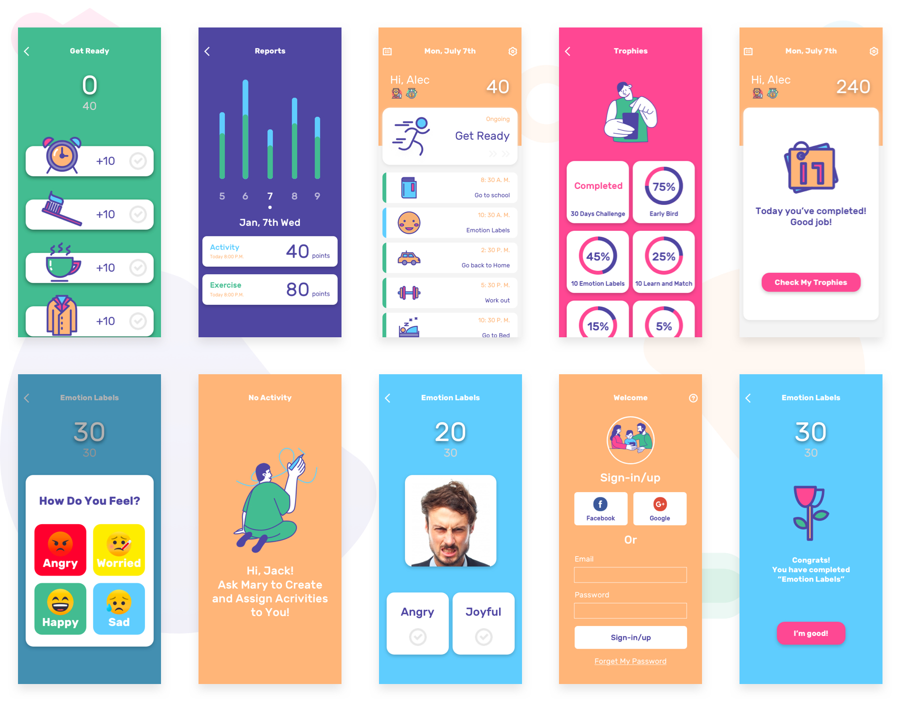
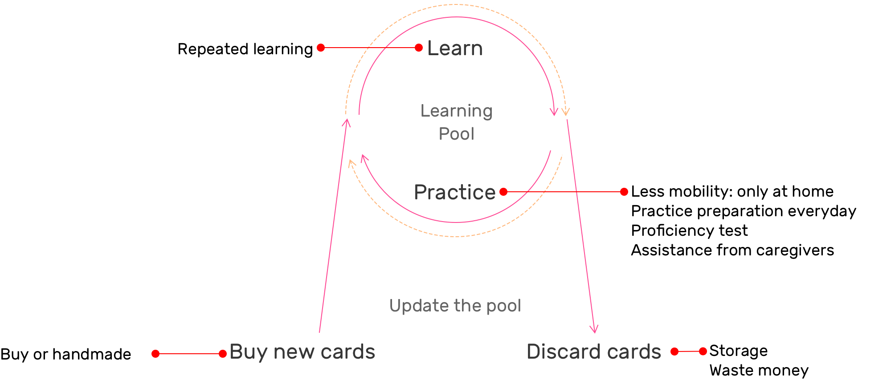
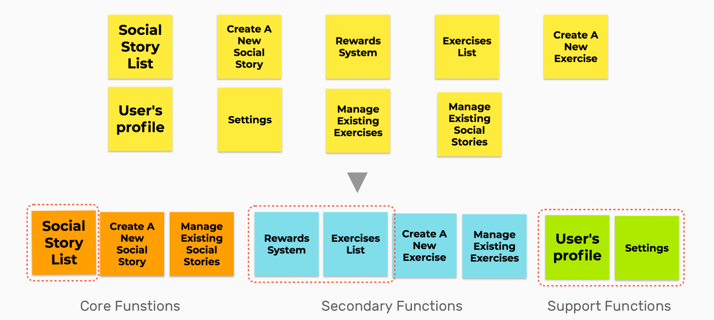
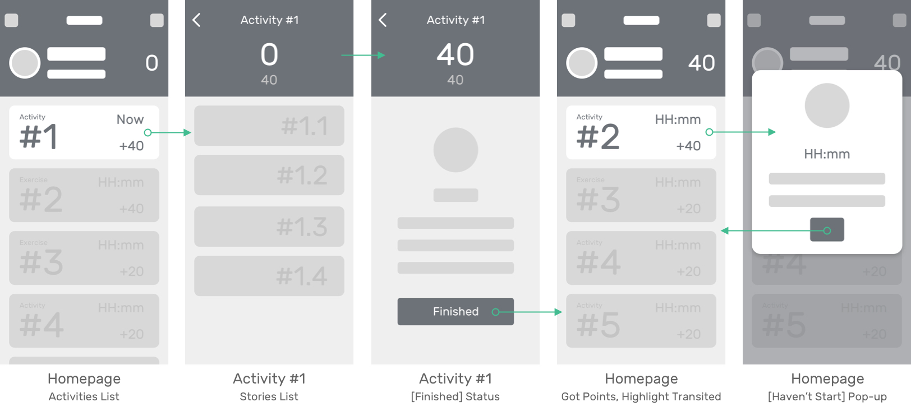
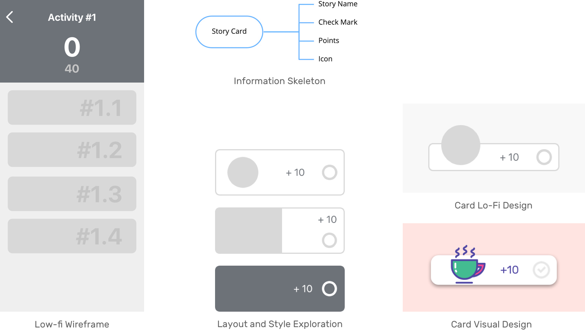
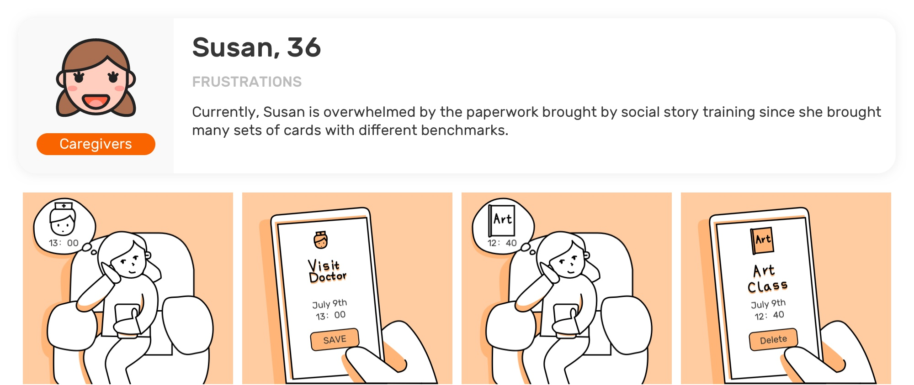
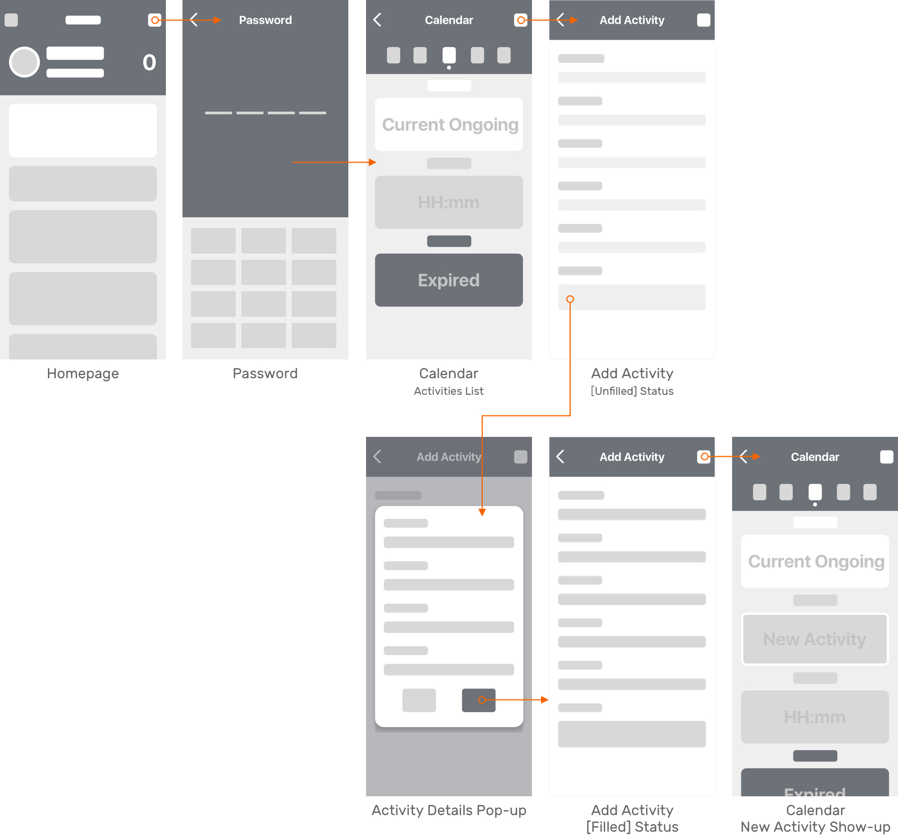
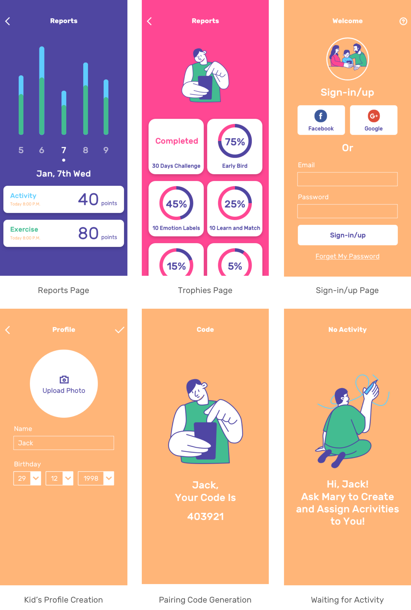

I have been working on developing digital solutions for Autism Spectrum Disorder Community at Gaia for one year since Dec 2018 as Product Design Lead.
Step * Step is under implementation and final testing, it's planning to launch in 2020.
Overview
Vision Statement
Gaiais a biomedical tech startup that focuses on providing better daily experience to Autism Spectrum Disorder Community, by creating wearable smart apparel and app systems.
Project Brief
The Challenge
1. How to appropriately digitalize a daily usage for autistic's caregivers?
Currently, autistic's kids are using Social Stories Training to practice communication skills with their caregivers. This high-frequency behavior requires a higher effective solution to optimize the learning process.
2. Simply, digitalizes this training process would bring more learning and management cost for caregivers and couldn't be very acceptable by autistic kids.
The Problem
The training process is highly-unstandardized thus takes many efforts from caregivers.
The current methods are paper cards or poorly-designed mobile apps that are inconvenient for training on an hourly base, not durable to use, and not easy to be updated. So caregivers are compromising their time and energy into the training process.

The Solution
Gaia is trying to build a digital service for Social Story Training to bridge the communication gap easier and get rid of the guesswork and paperwork while practicing.
A mobile app for Autism Social Story Training to
practice autistic kid’s communication skills based on the activities caregivers pre-set and standardized exercises.
Discover and Understand
Design Research
Identifying Problems of the Current Social Stories Training Experience
We got this idea from a user testing we did for the first products. A mother asked us if possible do we want to incorporate a function to assist in making a journal or social story into the app.
Our PM and I did several filed trips and in-person interviews from December to March to collect and validate user's needs and pain points.

Synthesized Insights
Learning from People
Persona and Journey

Insight #1
Social Stories Training is valuable, but currently costs a lot of caregiver's efforts in their daily life by managing cards, dependent relationship while practicing.
Learning from Competitors
Autistic caregivers are using printed paper cards or mobile apps to construct their kid's training plan, to practice social habits and communication skills.
Paper cards are not durable, since
1. Cards are not easy to manage and store.
2. If they lose one card, the story would be less consistent.
3. When caregivers bought several sets of cards, they would have many repetitive meaning cards.

In the digital market, fewer competitors focus on providing friendly and useful product design. Moreover, it's critical to make a well-designed user interface for autism kids because of their sensitivity and unstableness.
In the IOS APP Store, when searching Social Story(stories),
1. There are less than 5 results showed up, which mostly cost more than $10.
2. Their interfaces are basic, and the content is highly standardized, just like a copy from books and other online sources.

Insight #2
There is a significant design opportunity area since most well-known competitors have poorly-designed product interface and interaction.
Pain Points
Generate Concept
Ideation
HMW
Design a friendly interface for daily-based Social Stories practice for autism kids?
Expected Functions List
What should it include?
Design Requirments + Design Principles

The solution should have (1) lively user-app interaction, (2) customizable schedule function, (3) low learning cost/study, (4) and allow for various levels of comfort with unfamiliar touch.
Paper prototyping and concepts testing
Round 1: Group
We did several rounds of quick paper prototyping sessions based on user interviews and competitors study.
Round 2: Individual
We developed some low-fi ideas.
Round 3: Group
We did a review together with other team members and chose one of them to explore furthermore concepts.
Design
#1 Practice Social Stories
Target User and Scenario

User Flow 1
Practice with a real schedule and get reward points

When at the activity time caregiver set, kids could see the [Currently On-going Activity] is active and tap it jump to [Story Page] to finish the corresponding stories.
After completed all the stories, kids earn points and could go back to the homepage.
Before the set time, when kids could only see the time of next activity on the top of the page, and it shows the time of it. But it is not tappable until the time.
Layout and Style 1
Activity Cards and List Design

At this point, the two columns design is not useful and clear as the one column since it's harder for kids to recognized and left/right layout. And the one column is more intuitive for time order schedule.
And our strategy was going to provide some well-defined icons and also allow caregivers to upload icons or photos from their phones. So make the full image as the background has less expandability.
To arrange the layout of icon, time, points, and name of the activity, I chose to finalize the design as left picture and right description layout, which is familiar and easy to understand. Thus when mingling our icons and customized photos, there won't be a mess-up.
Visual Design Iterations Based on Feedback

Homepage Final Design
The final design shows in a todo list view. Activity and exercise respectively have different color code as blue and green. The bigger hero card is showing the ongoing or next event to notify users emphatically.


Layout and style 2
Stories cards and list design
The story cards also apply the left-right layout without the name of the story since it not remembering both name and order would be difficult for kids.
And the checkmark is very important in this scenario since it could give kids an indicator whether the story has been completed or not.
Social Stories Final Design

#2 Do Exercise
User flow 2
Excersice

When kids tap the exercises collection, it jumps to the exercises list page. Take video-modeling as an example. When kids complete it, kid earns the points and back to the homepage. And the total points cut down.
Pivot and Iteration
#3 Management
Let's meet another persona!
User flow 3
Management
By entering the password, caregivers could create typical stories, activities, and add exercises for their kids. And the calendar allows them to view, edit, delete activity.
Initially, we planed providing a calendar management function on mobile, which may have less development. But after testing and evaluation, we realized it has lower usability and not very friendly.
The main scenario of caregivers managing exercise and activity would fit more on the web portal. So we pivoted the idea of management and decided to provide the management function on a web portal to allow parents, caregivers, and therapists to create and assign activities to kids.
Final User Flow
Information Architecture


Other Screens
Guidelines
Visual System

Design
Final Solution

Designed and coded by Faye Yifei Gong | All Rights Reserved | @fayegong.xyz© 2016-2019